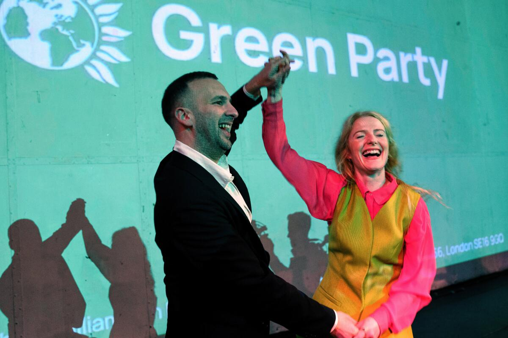

Green Party wins major by-election in northern England city of Manchester
2026, March 2

Green Party wins major by-election in northern England city of Manchester
2026, March 2
England
The Green Party of England and Wales candidate Hannah Spencer has been declared the winner of Thursday's by-election in Gorton and Denton, a parliamentary constituency in Manchester, which was triggered following the resignation of the previous Labour MP Andrew Gwynne.The election marks the first parliamentary by-election won by a Green Party candidate, and the first Green Party election win in the North of England. Spencer will become the fifth current Green Party MP, with just under 41% of the vote, a lead of 12% on the second-place candidate, Matt Goodwin of Reform UK, who received just under 29% of the vote.
The election was highly anticipated as a test of confidence for the current Labour government, which has seen numerous high-profile scandals over past months. The Labour candidate received 25% of the vote, dropping 25% from the 50% won at the 2024 general election. The seat was previously regarded as the sixth safest seat for the party in Britain, and had not been lost by a Labour Party candidate since 1931.
Mayor of Greater Manchester Andy Burnham had applied to stand as the party's candidate, but was blocked by its National Executive Committee over a worry that Labour would lose the resulting by-election for Mayor, and amid fears he would mount a leadership challenge against Prime Minister Keir Starmer.
Former Deputy Leader of the Labour Party and former Deputy Prime Minister Angela Rayner said that "This result must be a wake up call" amid the election adding to mounting internal party pressure on Keir Starmer to resign following the election, which would trigger a leadership election within his party. Starmer said in a statement that he was not planning to resign over the election results.
The Reform UK candidate Matt Goodwin's 29% of the vote was up 15% from the party's position in the constituency at the 2024 general election. Talking to BBC News reporters, Goodwin blamed the Green Party win on "a coalition of Islamists and woke progressives that came together to dominate a constituency", and said "many people in this country will look at Gorton and Denton and be appalled by what they see."
The Conservative and Liberal Democrat parties both won just under 2% of the vote, with the Conservatives dropping 6% from the previous election, and the Liberal Democrats dropping 2%. It is just the second time the Conservative Party has lost their deposit (which occurs by receiving under 5% of the vote) since 1962, and is the worst result in a by-election for the party in history.
The election and its campaign period has seen numerous allegations of misconduct. The Reform campaign was alleged to have breached campaign laws by not imprinting statutory material clarifying the publisher on a public letter addressed from pensioner and Reform UK worker Patricia Clegg mailed to households in the constituency and printed to appear handwritten. The Reform candidate Goodwin was acquitted by the High Court in a related case the day before the election.
The Green Party reported the Labour candidate Angeliki Stogia to police on election day after a campaign van not bearing the aforementioned imprint was pictured driving past polling stations, with text alleging the Greens wanted to "legalise all drugs and teach our children to use drugs" and "let our daughters be used for legal prostitution". The Electoral Commission says on its website that campaigners must not drive or park vehicles "heavily branded with campaign material" near polling stations.
Election observer group Democracy Volunteers raised concerns following the closure of polls of family voting, where families enter voting booths in groups to intimidate and collude with each other into voting for a specific candidate. It has been a criminal offence in Britain since the passing of the Ballot Secrecy Act 2023. It claimed to have observed the practice in 68% of polling stations it observed, affecting 12% of those voters seen. Manchester City Council, which oversaw the election, expressed disappointment in that the group did not alert election officials. It emphasised in a statement that "no such issues have been reported" by polling station staff, and said "We have operated a central by-election hub which has been rapidly responding to reported issues during the day, in liaison with the police - who had a presence at every polling station - where necessary."
Reform UK said it had reported the allegations of family voting to Greater Manchester Police, after the Electoral Commission said in a statement that "Electoral offences are a matter for the police", and echoed the statement given by Manchester City Council, saying "The statutory electoral observer Code of Practice says that electoral observers may bring potential irregularities, fraud or significant problems to the attention of elected officials on the spot." Reform leader Nigel Farage said in a post on X that the election was "victory for sectarian voting and cheating" in reference to the family voting.
The by-election precedes other highly anticipated local elections and elections to the devolved parliaments of Scotland and Wales, in which Labour is expected to lose large numbers of seats to Reform UK, the Green Party, and the pro-independence Plaid Cymru and Scottish National Party, all set to take place in May.